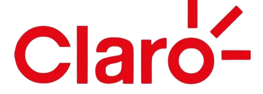
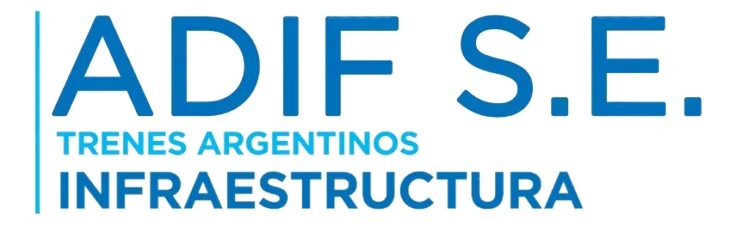
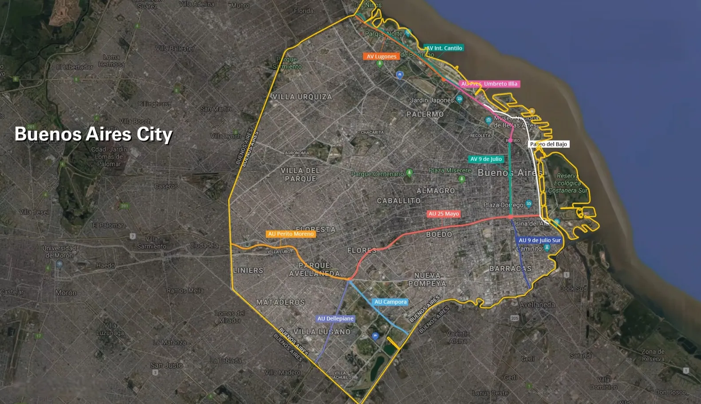
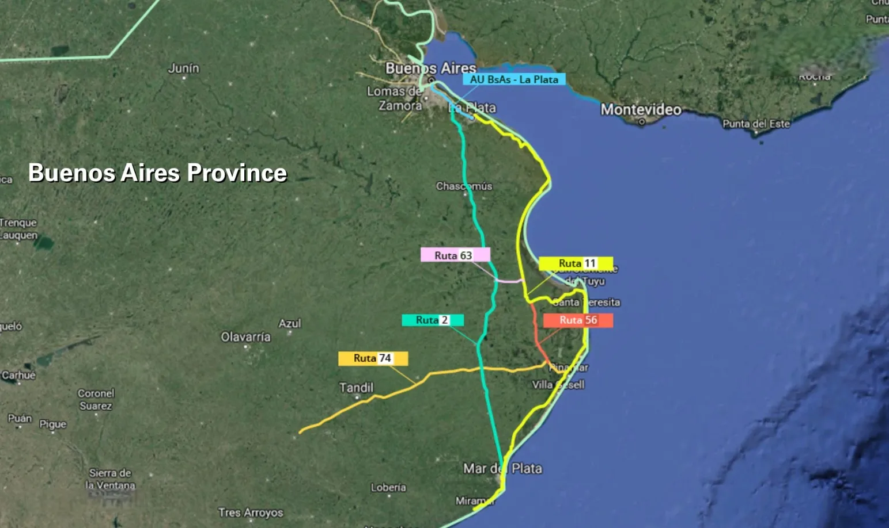
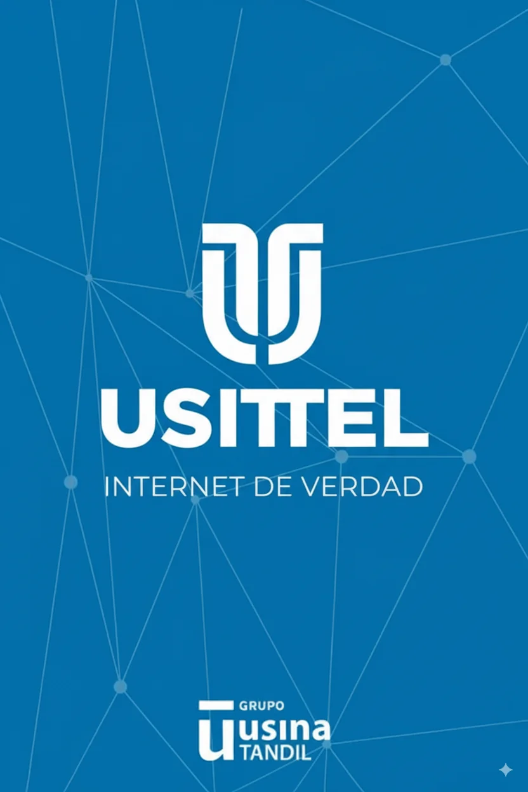
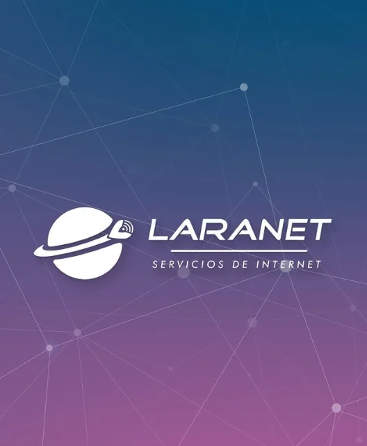
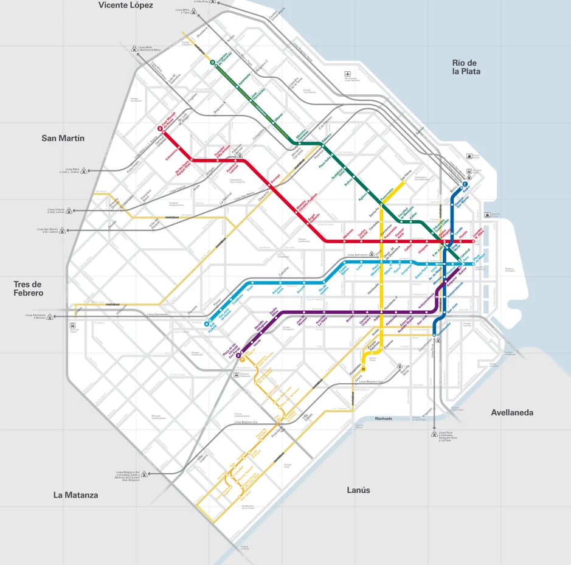
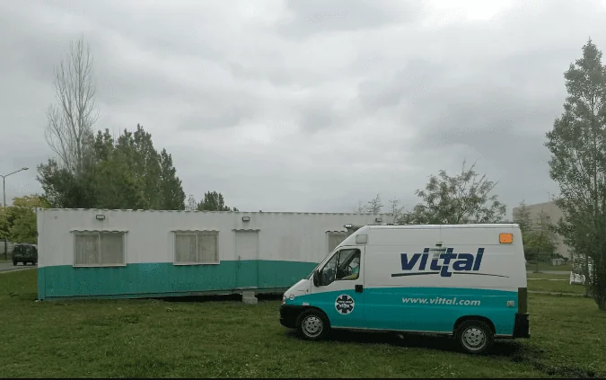
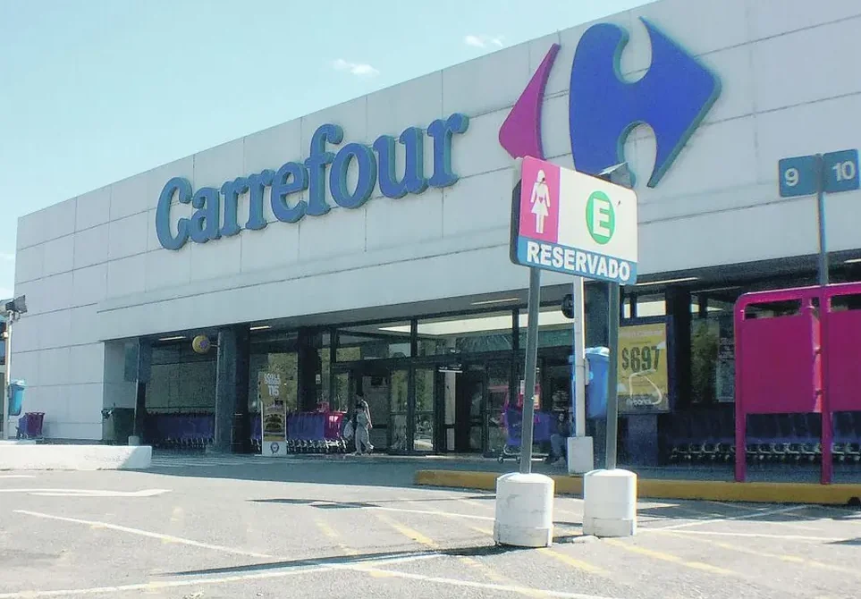

Teléfono
011-5272-9000
0810-345-ITTEL (4883)
Oferta integral: Torres de telecomunicaciones, Fibra Óptica y Servicios de Valor Agregado. Un solo interlocutor para toda la cadena de infraestructura.


Acuerdos comerciales vigentes con la totalidad de los operadores móviles de Argentina.


Red neutral con acceso para los principales carriers de fibra del país.



Presencia en todas las jurisdicciones del territorio nacional.
Registro fotográfico de obras ejecutadas en campo a lo largo del territorio nacional.


+ Años de
experiencia
+ Proyectos
de éxito
% de SLA
garantizado
Cada implementación demuestra nuestra capacidad de ejecución a escala.

Gestión integral de infraestructura TELCO de alto desempeño en CABA.

Red de fibra óptica redundante y backbone estratégico CABA - La Plata.



Relevamiento de infraestructura y potencial de desarrollo en trazados ferroviarios.

Sistema complejo de videovigilancia IP con grabación y acceso centralizado.

Infraestructura tecnológica integral con conectividad y monitoreo 24/7.
Operadores, concesionarios y organismos que confían en nuestra infraestructura.


Consultas comerciales, técnicas o institucionales.
011-5272-9000
0810-345-ITTEL (4883)